01・EXPLORE
Scratch Educators 教師資源
原始紀錄從教師專頁開始，依序呈現資源、教師社群與帳戶功能。點選任一畫面可開啟原尺寸截圖。
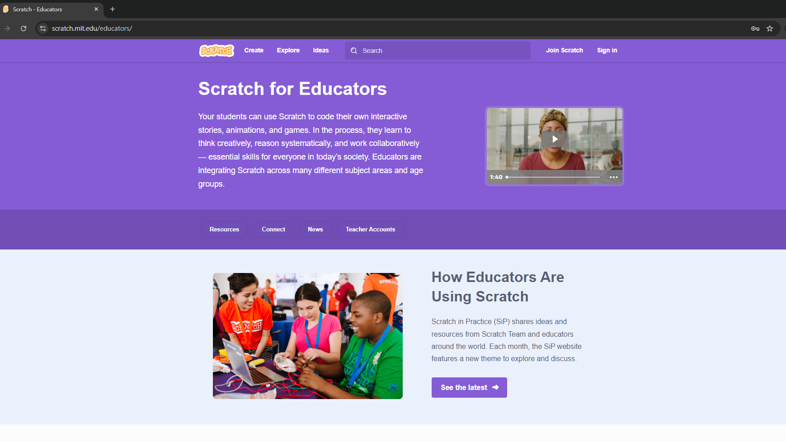
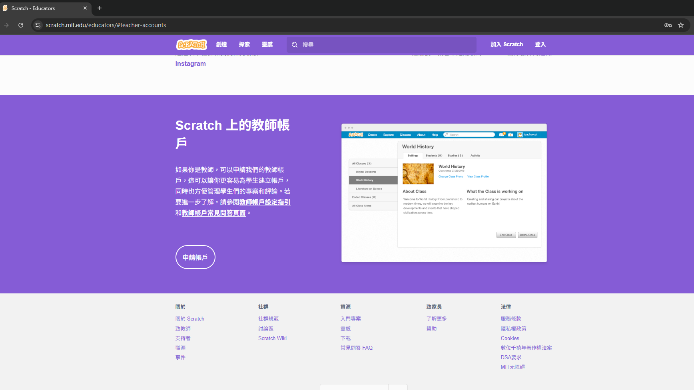
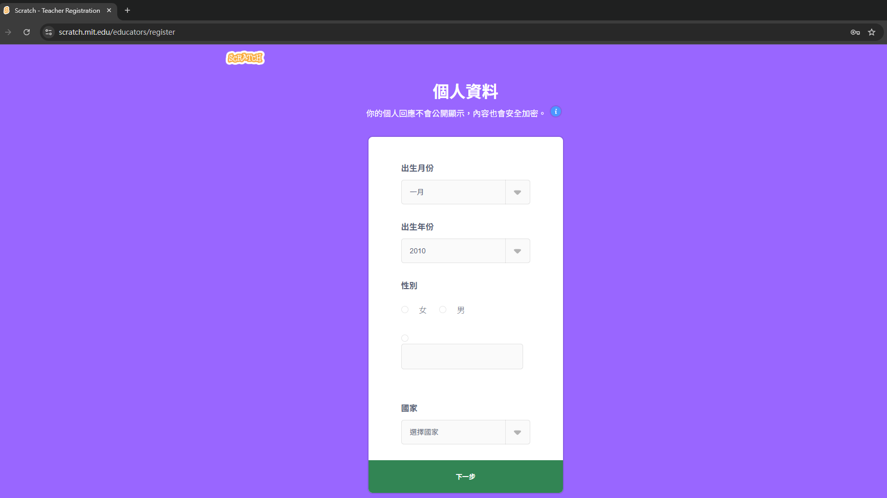
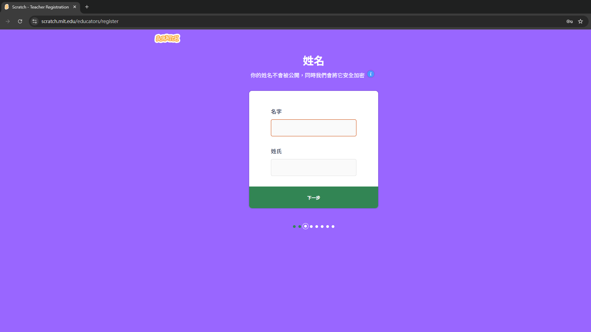
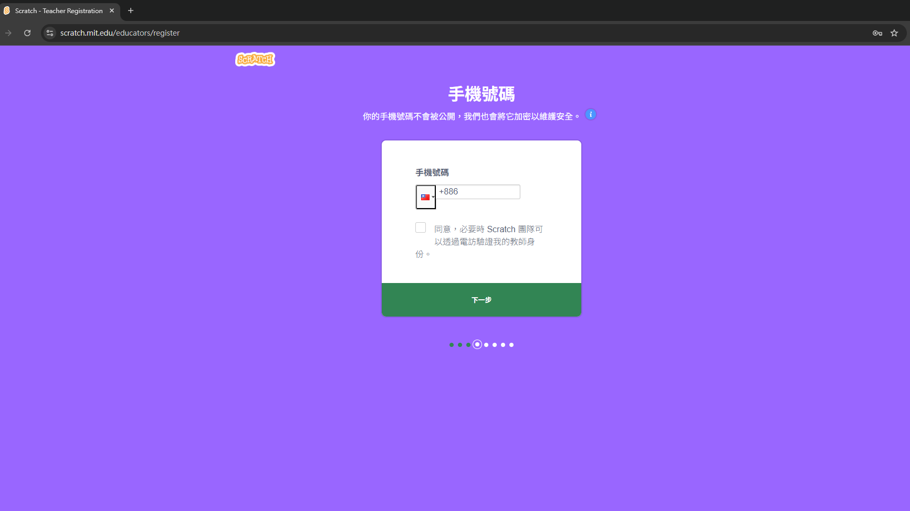
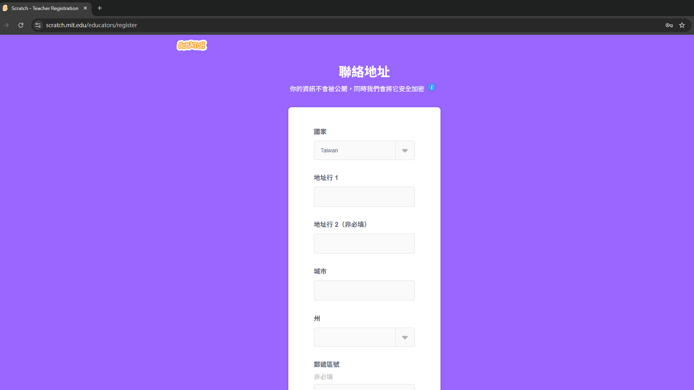
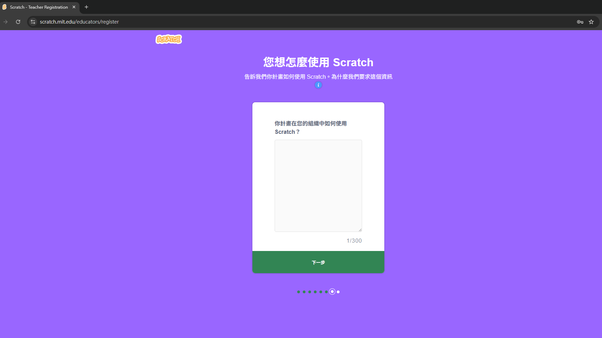
02・REGISTER
教師帳戶申請與驗證
先說明在組織中使用 Scratch 的方式，接著填寫並確認電子信箱；最後到信箱開啟驗證連結。實際欄位與審查流程請以官方網站當下畫面為準。
03・ORGANIZE
班級與學生名單管理
帳戶完成設定後，可建立班級並管理學生帳號。截圖也示範了以文字檔預先整理帳號與姓名，方便後續匯入或逐一建立。
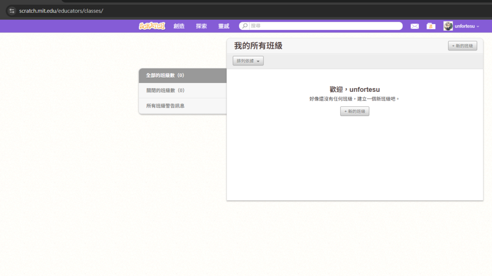
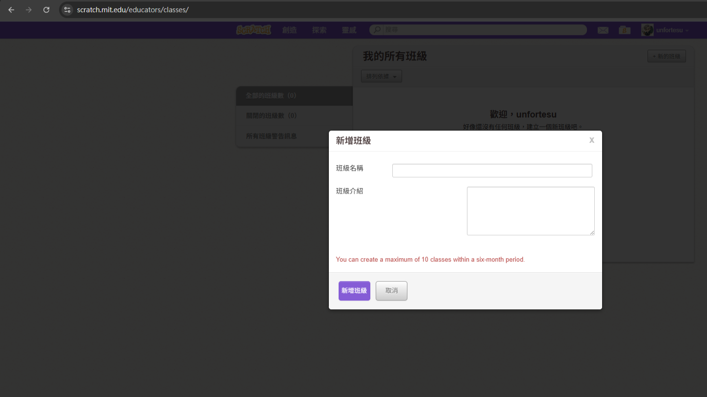
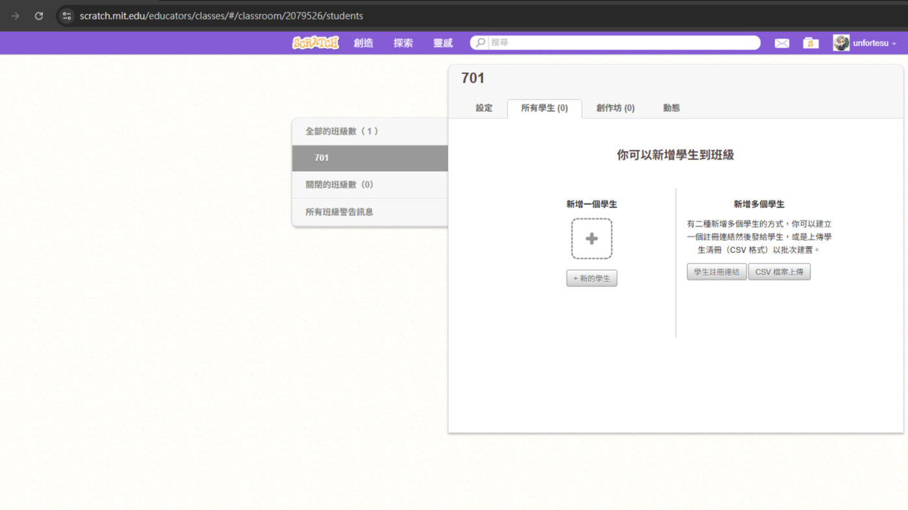
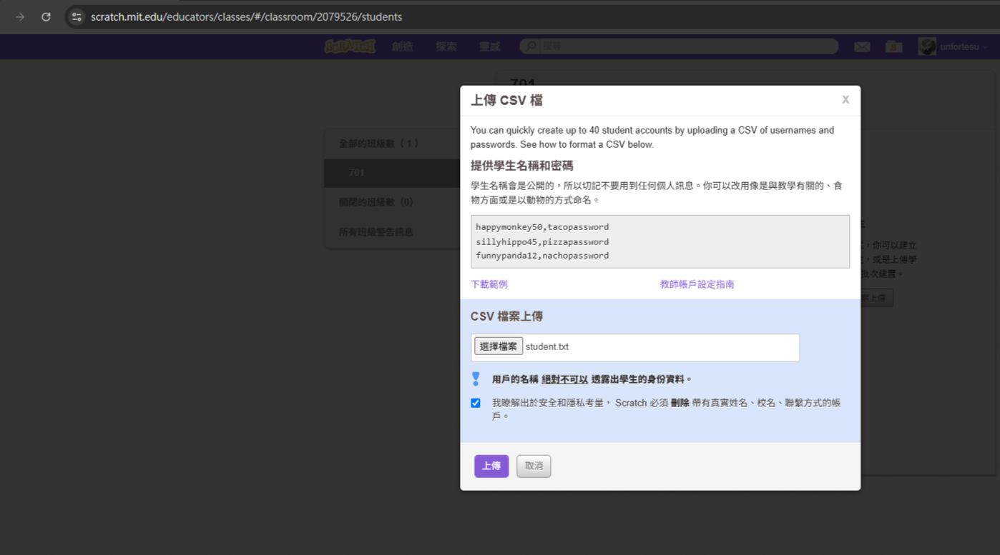
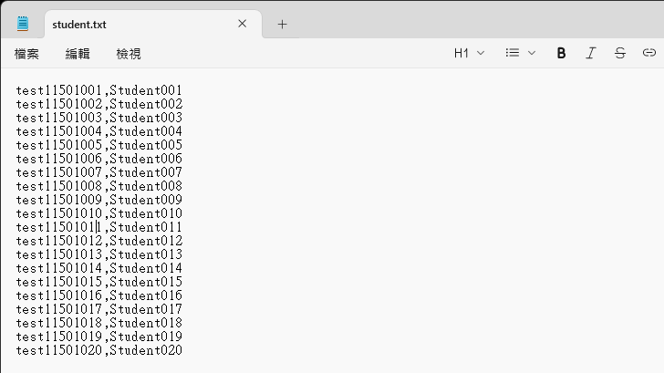
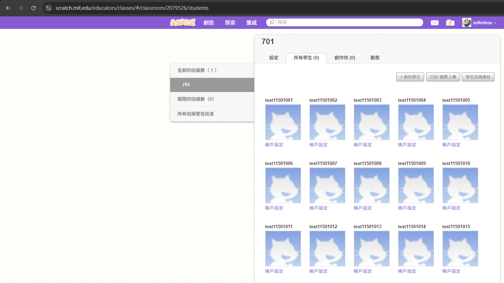
需要最新的功能與規則嗎？
本頁保存的是操作紀錄；帳戶申請、班級功能及驗證要求仍應以 Scratch 官方網站的即時資訊為準。